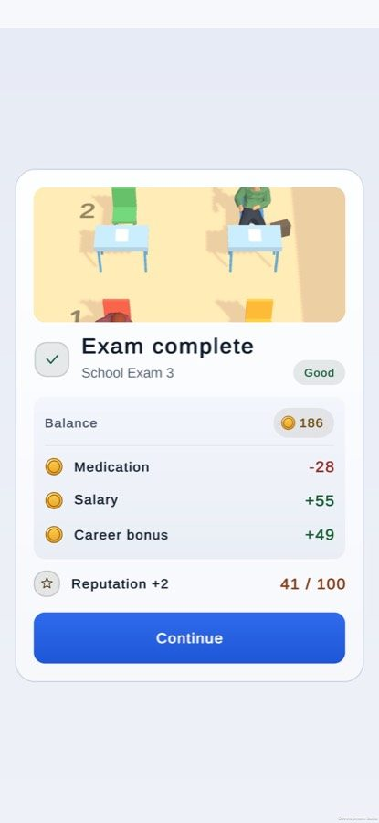

high#1
Result card (money)
FixedWhat I saw. After covering a second room, the ledger line reads cover_shift +70, the raw internal reason id.
Why it matters. Looks broken, and the player cannot tell what the 70 coins were for. The same gap hits the clean-record bonus (performance_bonus), which has no player text either.
Now. Every money line has words: Covered a second room +70, Clean-record bonus, Monthly bills. A test reads every reason id Core declares and fails on one without player text; an unknown id reads “Other”, never the id.

